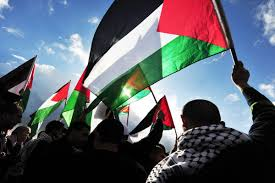

Principais Conflitos do Oriente Médio: Uma Análise Detalhada
O Oriente Médio é uma região marcada por uma complexa teia de conflitos históricos,
religiosos, políticos e econômicos, que se entrelaçam e se perpetuam ao longo dos séculos. A
seguir, apresentamos uma análise detalhada dos principais conflitos que moldaram e
continuam a moldar a geopolítica da região.
Questão Palestina e Conflito Árabe-Israelense
• Raízes Históricas: A questão palestina remonta ao final do Império Otomano e à
criação do Estado de Israel em 1948. A divisão da Palestina, a expulsão de palestinos e
a ocupação de territórios palestinos por Israel desencadearam décadas de conflitos e
instabilidade.
• Ocupação e Assentamentos: A ocupação israelense da Cisjordânia, Faixa de Gaza e
parte de Jerusalém Oriental, iniciada na Guerra dos Seis Dias de 1967, e a construção
de assentamentos israelenses nesses territórios são pontos cruciais de disputa.
• Intifadas: As intifadas, ou revoltas palestinas, marcaram diferentes fases do conflito,
com a primeira ocorrendo na década de 1980 e a segunda na década de 1990.
• Processos de Paz: Ao longo dos anos, houve diversas tentativas de negociação de paz,
como os Acordos de Oslo, mas as divergências sobre questões como fronteiras,
segurança, refugiados e Jerusalém impediram um acordo definitivo.

Resumo sobre a Questão Palestina
Questão Palestina é a atribuição dada ao movimento dos povos palestinos em busca da criação
de um Estado nacional da Palestina no Oriente Médio.
Teve origem em um conflito histórico entre os árabes e os israelenses pelos territórios
situados entre o mar Mediterrâneo e o rio Jordão.
Tem como principal causa a partilha desigual das terras realizada pela ONU em 1947, seguido
da criação do Estado de Israel sem o estabelecimento de um Estado próprio para os palestinos.
Os conflitos entre Palestina e Israel nunca cessaram desde então, a despeito de acordos de paz
e das determinações da ONU.
Recentemente houve a deflagração de uma guerra entre Israel e o grupo fundamentalista
Hamas, que governa a Faixa de Gaza desde 2007. Tal fato instalou uma grave crise humanitária
na região."
O que é a Questão Palestina?
Questão Palestina é o nome dado ao movimento histórico de retomada dos territórios
palestinos no Oriente Médio e de reconhecimento formal de um Estado da Palestina por parte
dos povos árabes. Esse movimento teve início com a criação do Estado de Israel por meio de
uma resolução da Organização das Nações Unidas (ONU) no ano de 1947. Desde então, os
conflitos entre os árabes e os israelenses se tornaram cada vez mais recorrentes, e os
palestinos ainda seguem em busca da criação de um território nacional independente."
A Questão Palestina é uma disputa histórica e complexa que envolve aspectos territoriais,
políticos e religiosos entre palestinos e israelenses. Aqui está um resumo do contexto
histórico:

1. Período Antigo: A região da Palestina tem uma história antiga, com ocupações por
diversas civilizações, incluindo os hebreus, que estabeleceram reinos como Israel e
Judá.
2. Domínio Otomano: A área foi parte do Império Otomano por cerca de 400 anos, até o
final da Primeira Guerra Mundial.
3. Mandato Britânico: Após a Primeira Guerra Mundial, a Liga das Nações concedeu à
Grã-Bretanha o mandato sobre a Palestina. Durante esse período, aumentou a
imigração judaica, especialmente devido ao movimento sionista, que buscava
estabelecer um lar nacional para os judeus.
4. Partilha da Palestina (1947): Em 1947, a ONU propôs a divisão da Palestina em dois
estados, um judeu e um árabe, com Jerusalém sob administração internacional. Os
judeus aceitaram o plano, mas os árabes o rejeitaram.
5. Criação do Estado de Israel (1948): Em 1948, foi proclamado o Estado de Israel, o que
levou à primeira guerra árabe-israelense. Muitos palestinos foram deslocados, criando
uma crise de refugiados que persiste até hoje.
6. Conflitos e Ocupações: Desde então, ocorreram várias guerras e conflitos, incluindo a
Guerra dos Seis Dias em 1967, quando Israel ocupou a Cisjordânia, Gaza e Jerusalém
Oriental. Esses territórios são ainda hoje pontos de disputa.
7. Processos de Paz e Intifadas: Houve tentativas de paz, como os Acordos de Oslo na
década de 1990, mas também períodos de violência intensa, como as duas Intifadas
(levantes palestinos) em 1987 e 2000.
8. Situação Atual: A situação permanece tensa, com conflitos esporádicos e negociações
de paz estagnadas. A Faixa de Gaza é governada pelo Hamas, enquanto a Cisjordânia é
administrada pela Autoridade Palestina, mas com significativa presença militar
israelense.
Crescimento Urbano Rápido
• Taxas de Urbanização: Nas últimas décadas, muitos países do Oriente Médio
experimentaram um crescimento urbano acelerado, com cidades se expandindo
rapidamente devido ao aumento da população e migrações internas.
• Cidades em Expansão: Cidades como Dubai, Doha e Riyadh cresceram rapidamente,
tornando-se centros regionais de comércio e turismo.
Fatores de Urbanização
• Recursos Naturais: A descoberta de petróleo e gás natural impulsionou a urbanização,
atraindo investimentos e criando oportunidades de emprego nas cidades.
• Migração Rural-urbana: Muitos indivíduos migraram de áreas rurais em busca de
melhores condições de vida e emprego, contribuindo para o crescimento das cidades.
Desafios Urbanos
• Infraestrutura: O rápido crescimento urbano levou a desafios significativos em termos
de infraestrutura, habitação e serviços públicos, como saúde e educação.
• Desigualdade Social: O crescimento urbano nem sempre se traduz em
desenvolvimento equitativo, resultando em disparidades significativas entre diferentes
classes sociais e grupos étnicos.
Cidades e Identidade
• Diversidade Cultural: As cidades do Oriente Médio são centros de diversidade cultural,
refletindo a rica herança histórica da região, mas também enfrentam tensões sociais e
políticas
• Espaços Públicos e Vida Urbana: O design urbano e a criação de espaços públicos são
importantes para promover a coesão social, embora frequentemente sejam afetados
por desigualdades.
Planejamento Urbano
• Iniciativas Sustentáveis: Com o aumento das preocupações sobre as mudanças
climáticas e a sustentabilidade, alguns países estão implementando iniciativas de
planejamento urbano mais verdes e sustentáveis.
• Mega Projetos: Cidades como Dubai se tornaram conhecidas por mega projetos,
incluindo arranha-céus e infraestrutura moderna, mas isso também levanta questões
sobre sustentabilidade e impacto social.
Perspectivas Futuras
• Urbanização Sustentável: A necessidade de abordar os desafios da urbanização com
soluções sustentáveis e inclusivas é cada vez mais reconhecida por governos e
organizações internacionais.
VOLTAR